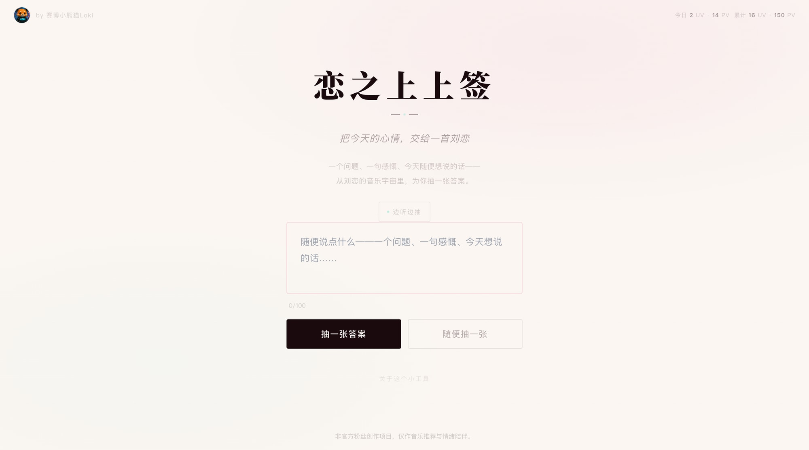

不收录完整歌词
每首歌我都只挑很少几句值得分享的，卡片上一次只出现一句，也不做歌词搜索和完整列表。
答案之书大家都知道嘛，我就想做个刘恋歌词版。你写下今天的心情，它从我挑好的 147 条短句里回一张卡，可以存下来。抽到一句喜欢的就去听那首歌，别指望它算命啊。

每首歌我都只挑很少几句值得分享的，卡片上一次只出现一句，也不做歌词搜索和完整列表。
AI 只在已经挑好的短句池里做匹配，不替我生成、续写，也不改歌词。版权属于作词人自己：就算这是个粉丝向的、不商业化的东西，也得尊重别人的版权；何况她很多歌的版权并不完全在她自己手上，所以每首歌我只限定抽 3 到 5 句。
卡片标明歌曲出处，并通向正版音乐平台，整个应用里也写明了这是非官方粉丝作品。
我把抽到过的句子排掉，候选池扩大，再从里面按权重抽，不再总是给排名最高的那一句。
我不再只说【好看一点】，开始拆刘恋的穿搭、MV、舞台光和构图。
浏览器导出的限制不少，手机那边我单独做了一张可以直接长按保存的图。
站内播放器修到最后还是放弃了，改回让人去正版音乐平台听。
第一批备选三十首歌，真正能稳定试听的只有五首。能播的留下、不能播的先出局，再谈选句，歌单就是这样一轮轮扩到 44 首的。
首发一批之后，先给奇谈和 OST 补了 26 条；再从 12 首歌里把每首从 2 条扩到 3 条以上，总数到 147。这个数在词库里能一条条数出来。AI 不生成、不续写，只在这个池子里匹配。
关键词表一路在加词，又配上一本两万五千词的中文情感词典做辅助对齐，让今晚的心情和抽到的这一句真的对得上，别变成随机抽一张。
16 套卡片视觉之外，光把卡片存下来这件事就修了七八轮：换渲染库、锁像素尺寸，屏幕和导出各渲染一套。站内播放器修到最后放弃了，为了国内能访问，代理也迁了两次家。
KEEP EXPLORING